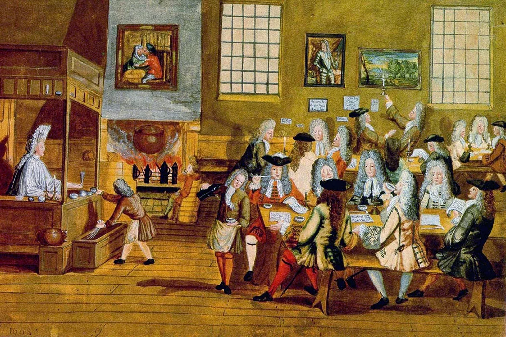

Introduction
Great Britain, from the start, had a mindset of constant expansion driven by commercial ambitions and pressure from other European powers. Religious influence also played a big role in the mission of the British Empire since spreading their Western ideas of religion and community was always the main change they made when colonizing a new region. In this page of the Interactive Museum, we will look at what exactly the imperial mission of Great Britain meant and what that resulted for colonized countries.
1. The influence of neighbouring European countries:
During the 19th century, there was a global economic recession, and European countries such as France, Germany and Belgium were starting to colonise unclaimed land in Africa, this gave Britain further motivation to continue expansion as the desire to appeal to new nations and to prove their own nation was a priority. The notion of keeping safety and stability in their current colonies also led Britain to make sure neighbouring countries did not interfere with their colonies.
2. Trade and economy in Britain:
Going back to the 17 and 18th centuries in Britain, we see a trend of mercantilism in the mindset of British powers, this is then seen very apparent with their dominant navy and increasingly profitable trade routes, this philosophy was kept for centuries and is why later on the British Empire had such a developed navy. We can also see Mercantilism come into play with Britain's empirical mission through its desire for economic Dominance, the British Empire wanted to monopolize over European economy so the accumulation of precious metals and creating a balance of trade more favourable for themselves was achieved by their sole mission of Imperialism.
Conclusion
Britains sought one mindset over their centuries of colonial dominance, and that is imperialism, through the pressure of other European powers and their own mercantilism the British Empire had anywhere from 50 to 60 colonies across the world by the 1920s.